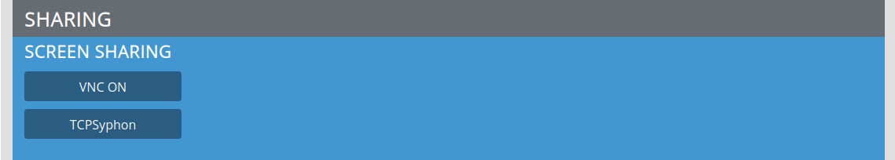
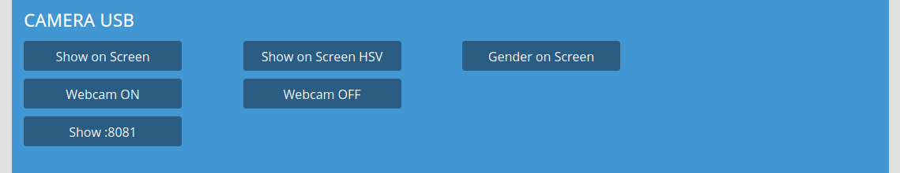
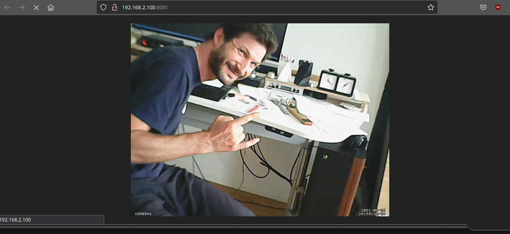

SHARING¶
VNC SCREENSHARING¶
Mac OSX:
Download Vine Server from http://www.testplant.com/dlds/vine/ and install it.
Start Vine Server, in the menu select Server / Reverse Connection.
Fill in the IP which is displayed on the screen of the PocketVJ.
Voilà, you should have your computer display mirrored.
Note
Your computer display must have the same resolution as the screen connected to the PocketVJ. If the display is confusingly stretched, it might be that your computers resolution is set too high.
Set your computers resolution to max. 1920x1080 pixel and try it again.
If you use a Retina Macbook, install RetinaDisplay Menu from www.phoenix-dev.com to change your resolution to low DPI.
Windows:
Download TightVNC for Windows from http://www.tightvnc.com/ and install it. Make sure you select complete installation!
You should find the TightVNC symbol in the taskbar, right-click it and select “Attach Listening viewer” and type in the address which is showing on the screen, without :5500.
Linux (Debian/Ubuntu):
Install vnc4server: sudo apt-get install vnc4server
Open a terminal and type:
vnc4server -connect 2.0.0.100:5500
x11vnc -connect 2.0.0.100:5500
3. If you have a second monitor attached where the mapping is visible, and you want to display this part of screen, use the -clip option:
x11vnc -connect 2.0.0.100:5500 -clip 1920x1080+1920+0
TCPSYPHON¶
See tutorial: https://video.pocketvj.com/AVideo/video/18/pocketvj_tcpsyphon
Very useful if you want to use PocketVJ as a second screen for VJ applications supporting Syphon or Spout.
OSX: Download TCPSyphon Server http://techlife.sg/TCPSyphon/ Win: Download TCPSpout Server http://techlife.sg/TCPSpout/ and install it on your Computer. Mirrors: https://pocketvj.com/downloads/syphon.zip https://pocketvj.com/downloads/TCPSpout.zip
Connect your computer to the same network as the PocketVJ. (make sure you are not connected to another network as well!).
Start TCPSyphon server, select the input under Syphon Server List.
Boot PocketVJ into TCPSClient mode and if your networksettings are right, your PocketVJ should automatically act as a Syphon display.
Note
TCPSyphon Server should be running before you boot up the PocketVJ. Only use it if you have a RJ45 connection to the PocketVJ, we tested with Wifi and it is laggy.
Max. numbers of TCPSyphon clients are 10. Your video application must support a Syphon output.
Alternatively you can use Screen Capture Syphon http://techlife.sg/ScreenCaptureSyphon/ to define an area to be mirrored to the PocketVJ.
For Linux: use Screensharing (VNC) with the -clip option which works pretty well. Instead of a second screen, attach a HD gameplay recorder to the HDMI port.
CAMERA USB¶
Show on Screen => Shows image of connected webcam on screen.
Show on Screen HSV => Shows image of connected webcam on screen with a color effect.
Gender on Screen => Shows camera image of connected USB webcam and tries to classify male/female (attention, this uses a lot of CPU and might overheat your unit!) .. note:
This takes quite a while until its displayed on your connected screen, just give it some time.
The code is not finished yet, it should act as a trigger and not to display the image.
If you are motivated please contribute your code additions.
Reboot after using this feature, its not stopped correctly yet!
Webcam ON => Enables Webcam.
Webcam OFF => Disables Webcam.
Show :8081 => Display output of Webcam in your browser, this is useful for some kind of security feature over the network (give it a few seconds to refresh!!) (e.g. when you want to check if someone is looking at your artpiece or not).
Note
Just connect any generic USB camera and reboot to use above mentioned features:
piCAMERA¶
Things if you connect a piCam, this will be deprecated in future since there is not enough space to mount such a cam.
Enable => Enables a connected picam
FX¶
used for fx to the piCam. Needs some updates and coding work for an USB cam.